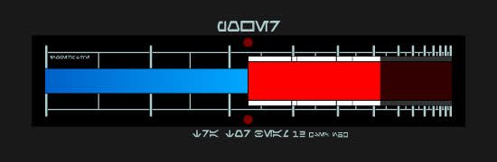

Informatique et GN
La technologie comme outil de jeu
GNiales Paris
1-2 Novembre 2014
Axel Kesel-Borie - Rémi San
L'informatique au service du jeu
VS
Outils hors jeu
Des solutions en jeu
Destinées à être utilisées pendant le jeu.
Ni avant, ni après (quoique...)
Pour les scènes de jeu
Enrichir les scènes et délester les orgas / PNJs
Pour et par les joueurs
Manipulés par les joueurs directement
Logiciels & Jeux
Un minimum d'efforts pour un maximum d'effets
Les "props"
Issus du cinéma ou de passionnés qui les reproduisent
Rayon tracteur
(Star Wars)

Une reproduction du rayon tracteur de l'étoile noire.
Utilisable en Space Op
Viseur de tourelle de tir
(Star Wars)
Une reproduction du système de visée des tourelles du Millenium Falcon.
Utilisable en Space Op
Ecran de contrôle de fusil
(Alien)

Une reproduction du système de contrôle du fusil Sentry.
Utilisable en Space Op
Logiciels "professionnels"
Des logiciels d'apprentissage ou simulateurs à usage professionnel détournés.